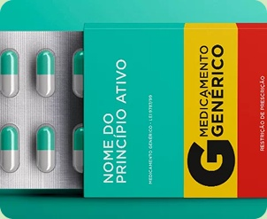

Estímulo de ação
Publicações que educam ou ajudam são mais salvas e compartilhadas do que panfletos digitais puramente
Ela é a terceira etapa da nossa metodologia.
Após toda estruturação, iniciamos toda a manifestação do que a empresa acredita e quer levar como marca. Não seguimos tendências, seguimos aquilo que a empresa acredita em todos os canais de comunicação.
Infelizmente as redes são enxurradas por conteúdos fúteis e trends vazias, nós
não levamos a rede social dessa maneira, acreditamos que o conteúdo de
valor ainda vale muito, para o público certo, e eles também pensam assim:
Publicações que educam ou ajudam são mais salvas e compartilhadas do que panfletos digitais puramente
Seguir tendências cegamente gera um ganho de visibilidade temporário, mas dilui o propósito da marca se não houver conexão profunda

O social media tradicional focado em conversão imediata ou atenção superficial está perdendo espaço para estratégias de relacionamento.
Foi assim com nossos clientes, e graças a essa aplicação inteligente, todos
conseguiram obter uniformidade em seus pontos de contato.

Não entregue mais, entregue melhor!
Preencha aqui. Vamos entender mais sobre como melhorar a marca da sua empresa.